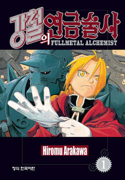
강철의 연금술사
강철의 연금술사는 금기된 연성으로 몸을 잃은 엘릭 형제가 이를 되찾기 위해 '현자의 돌'을 찾아 떠나는 여정을 그린 만화입니다.
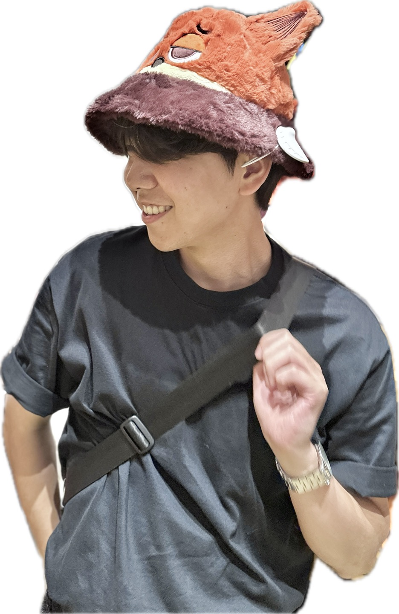
안녕하세요~
'함께 하고 싶은 개발자'가 되고 싶은 이든이라고 합니다. 제가 경험한 프로젝트는 깃허브 에서 확인이 가능합니다.
| 이름 | 이재윤 |
|---|---|
| MBTI | ESTP |
| 취미 | 여행, 음악 감상, 게임, 농구 |
| 좋아하는 음식 | 고기 |
저희 집 고양이를 소개합니다.
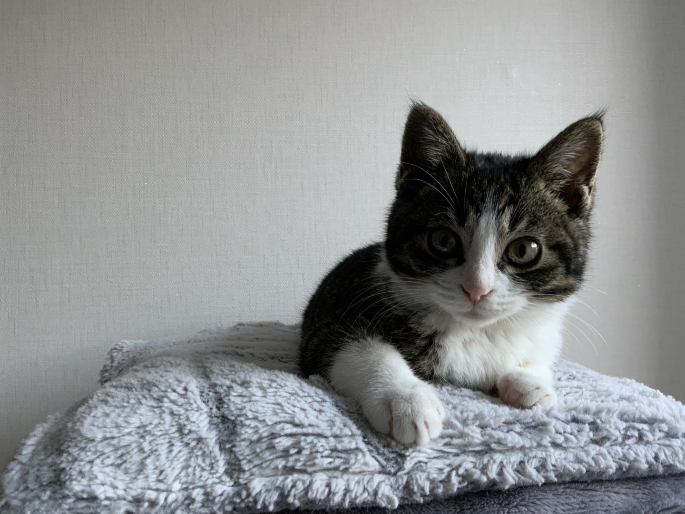
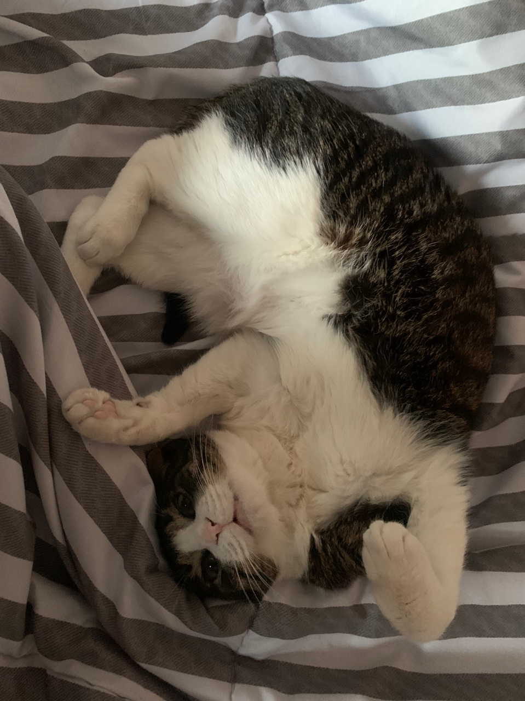
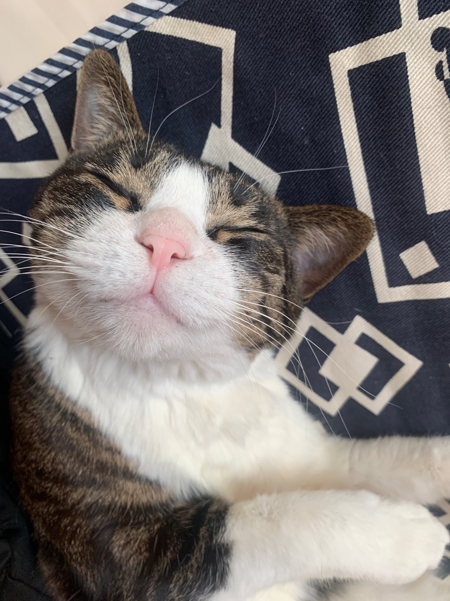
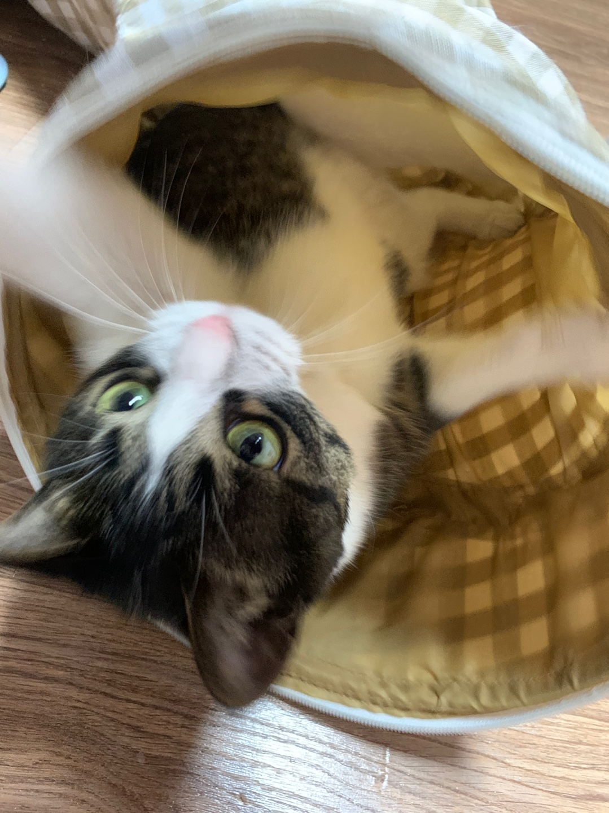
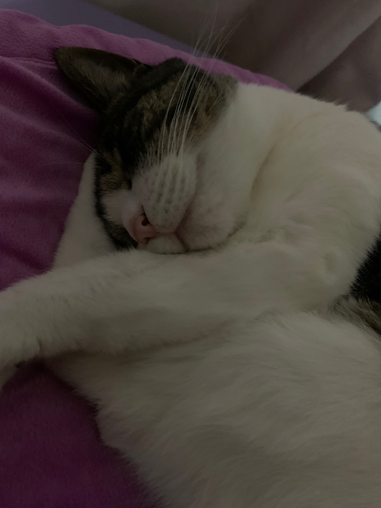
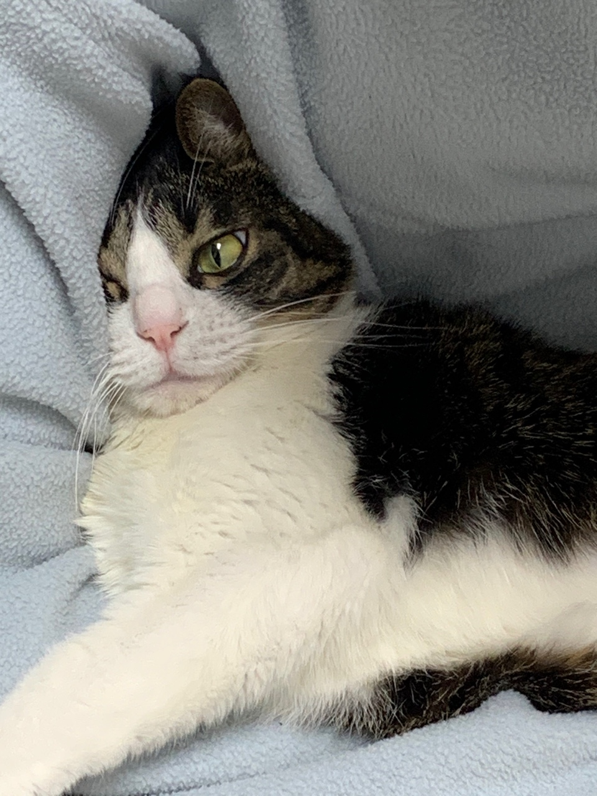
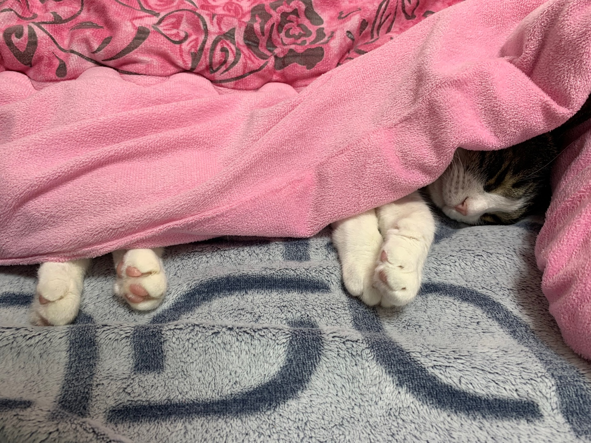
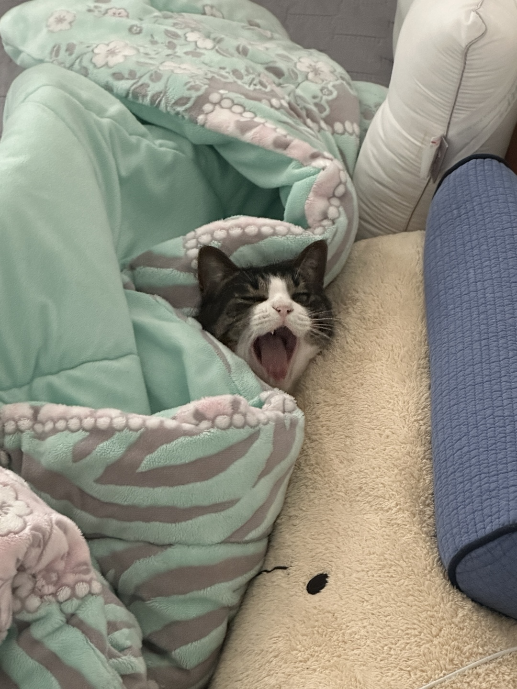
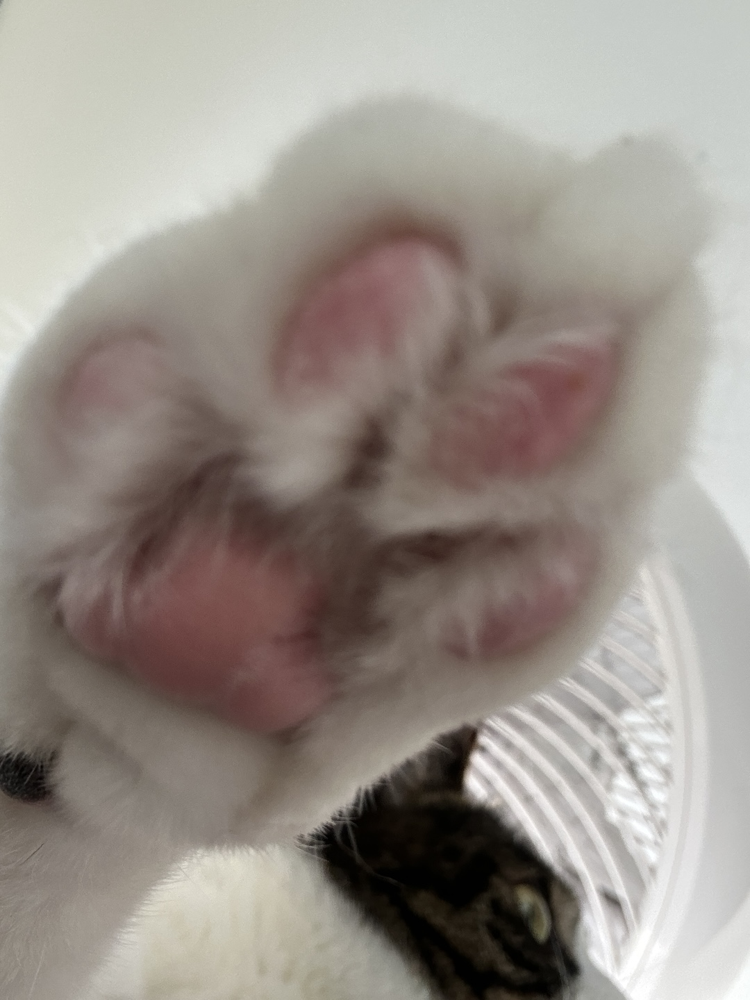

강철의 연금술사는 금기된 연성으로 몸을 잃은 엘릭 형제가 이를 되찾기 위해 '현자의 돌'을 찾아 떠나는 여정을 그린 만화입니다.
위플래쉬(Whiplash)는 최고의 드럼 연주자가 되려는 신입생과 그를 한계까지 몰아붙이는 폭군 교수의 광기 어린 대립을 그린 음악 영화입니다. 해당 영상은 작 중에 제일 많이 나오는 곡입니다.
오늘 새롭게 배운 것들을 기록합니다.
header, nav, main, section, article, footer 등 시멘틱 태그의 역할과 사용법을 배웠다.